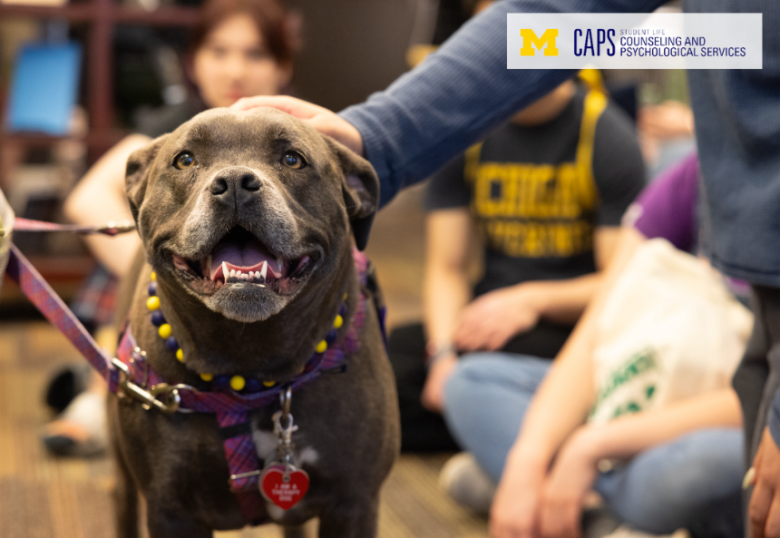

Welcome to the UM Grad Success Navigator
Your one-stop-shop to find the most important MSI resources in an effective and actionable format.
This is a guide to help you successfully navigate your life as a graduate student at the University of Michigan. We have put together the following for you:
- Academic Success Resources
- Mental Health Resources
- Basic Needs Resources
- Contact
Academic Success Resources
We know that graduate school is a big investment, and your success is our top priority.
The MSI Academic Advising website is one of the best tools to help you along this journey.
How can MSI Academic Advising help you?
Whether your goal is to proudly hold your degree in hand or to use this experience as a stepping stone toward the dream you hold in your heart, the website is filled with resources for important endeavors like:
- Academic Advising
- Academic Planning
- Student Support
Visit our MSI Academic Advising resource guide for a breakdown on the academic success resources available on this website and how you can use them.
Mental Health Resources
Graduate school is a significant step from undergraduate life. At the University of Michigan, graduate students are expected to maintain a high level of professionalism.
There are important mental health resources available to you through Counseling and Psychological Services (CAPS).

How can CAPS help you?
With an increased workload and difficult life transitions, graduate life can be overwhelming. However, ou do not need to navigate these challenges alone.
CAPS can support your mental wellbeing throughout your degree by providing accessible resources for the following:
- Group Work Sessions
- Workshops
- Crisis support
Visit our Counseling and Psychological Services (CAPS) resource guide for a breakdown on the mental health resources available on this website and how you can use them.
Basic Needs Resources
While academic success and mental wellness are important for success in graduate school, it is important to acknowledge that these are built on a baseline of basic needs.
As a graduate student, a crucial resource to be aware of is the Student Life: Basic Needs resource website.

How can Student Life: Basic Needs help you?
Maslow's hierarchy of needs emphasizes that physiological needs like food, water, and safety must be met before you can focus on higher-level goals like academic success.
Student Life: Basic Needs can help ensure you have access to the following:
- Housing
- Healthcare
- Finances
- Food
- Transportation
- Critical Incident Support
Visit our Student Life: Basic Needs resource guide for a breakdown on the basic needs resources available on this website and how you can use them.